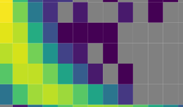

I am a cosmologist and assistant professor at the Institute for Astronomy (IfA) at the University of Hawai'i. My research lies at the intersection of data analysis and theory. I am interested in a wide range of topics, including large scale structure, gravitational lensing, the cosmic microwave background, cross-survey analyses, and statistical methods. A particular focus of my work is developing new techniques to extract cosmological information from astronomical surveys.
Prior to joining the IfA, I was a Kavli Senior Fellow at the University of Cambridge and a postdoc at the University of Pennsylvania. I completed my PhD at the University of Chicago under the supervision of Prof. Scott Dodelson.
Eric Baxter passed away in June 2024. Please see the obituary linked on the left of this page.
Research
My publications can be found here.

Galaxy surveys x CMB lensing
By cross-correlating galaxy surveys with gravitational lensing of the CMB we can improve the precision and robustness of cosmological constraints.

Galaxy clusters
Galaxy clusters are potentially powerful cosmological probes, as well as fascinating astrophysical objects.

Baryons and the Sunyaev Zel'dovich effect
The SZ effect provides a tool to measure the distribution and thermal state of electrons throughout the Universe.

Indirect detection of dark matter
It may be possible to learn about the properties of dark matter by detecting photons produced when a dark matter particle meets its antiparticle..

Cosmic tensions
The increasing size of astronomical and cosmological datasets calls for novel approaches to data analysis. Several recent cosmological measurements are in apparent disagreement. Are these 'tensions' due to new physics or poorly understood systematic uncertainties?

Statistics and machine learning
Advanced statistical and machine learning methods offer the possibility of extracting more information from our data.
Code
I develop code on GitHub (although some repositories are private) here.
Galaxies x CMB lensing
Overview
Cosmic microwave background (CMB) photons have travelled across the entire observable Universe by the time they reach our telescopes. During this journey, the paths of these photons are perturbed by the gravitational lensing effect of intervening structure. High-resolution CMB experiments can be used to estimate the lensing distortion, providing in essence a map of projected structure in the Universe between the observer and the last scattering surface from which the CMB originates. I am interested in how CMB lensing measurements can be combined with overlapping measurements of low-redshift structure provided by galaxy surveys to improve cosmological constraints. In particular, by cross-correlating galaxy surveys with CMB lensing, we can improve the precision of high-redshift measurements of the mass distribution, and increase the robustness of cosmological constraints to systematic uncertainties.
Students involved with this work: Yuuki Omori (now a postdoc), Judit Prat (now a postdoc).
Related publications
Cosmological constraints from DES Year 3 x CMB lensing II:
DES and SPT collaborations 2022
Cosmological constraints from DES Year 3 x CMB lensing I:
Chang, Omori, Baxter et al. 2022
Methods for DES Year 3 x CMB lensing:
Omori, Baxter, et al. 2022
Cosmological constraints from DES Year 1 x CMB lensing:
DES and SPT collaborations, 2018
Analysis of cross-correlations between galaxy and CMB lensing:
Omori, Baxter, et al. 2018
Using galaxy and CMB lensing ratios to constrain cosmology:
Prat, Baxter et al. 2018
Methodology for analyzing joing galaxy survey and CMB lensing two-point functions:
Baxter et al., 2018
Joint measurement of galaxy-galaxy lensing and galaxy-CMB lensing with DES and SPT:
Baxter et al., 2016
Galaxy clusters
Overview
Galaxy clusters are the most massive, gravitationally bound structures in the Universe. Their extreme position on the halo mass function makes them highly sensitive probes of cosmological expansion and growth of structure. However, in order to make use of clusters as cosmological probes, we must be able to measure their masses. I am interested in developing techniques for cluster mass calibration, and in understanding potential biases to mass estimates. This include exploring physical process inside and around galaxy clusters, like the so-called splashback effect and large-scale gas shocks.
Students involved in this work: Anna Gardner, Tze Goh, Tae-hyeon Shin (now a postdoc).
Related publications
The impact of shocks can be seen in the averaged SZ profiles of galaxy clusters:
Baxter, Adhikari et al. 2021
Using CMB cluster lensing to calibrate the cluster mass-observable relationship:
Baxter et al., 2017
First measurement of CMB cluster lensing:
Baxter et al., 2015
Measuring the splashback feature using DES weak lensing data:
Chang, Baxter et al., 2017
Halo boundaries and splashback measured in SDSS:
Baxter et al. 2017
Using cluster clustering to calibrate the mass-richness relation:
Baxter, Rozo, Jain et al., 2016
Probing baryons with the Sunyaev Zel'dovich effect
Overview
Uncertainty on the impacts of baryonic feedback on the matter distribution is currently a dominant systematic for weak lensing constraints on cosmology. The thermal Sunyaev Zel'dovich (SZ) effect, caused by CMB photons inverse Compton scattering with hot electrons, provides a powerful way to measure the gas distribution and understand the impacts of feedback. By cross-correlating galaxy surveys with measurement of the SZ effect, we can constrain feedback models and study the evolution of diffuse gas over cosmic time.
Students involved in this work: Shivam Pandey (now a postdoc), Kai Lehman (visiting student at IfA).
Related publications
Impact of feedback on lensing x SZ:
Pandey, Gatti, Baxter et al. 2022,
Gatti, Pandey, Baxter et al. 2022
The impact of shocks can be seen in the averaged SZ profiles of galaxy clusters:
Baxter, Adhikari et al. 2021
Correlations of high-z galaxies with the thermal SZ traces reionization:
Baxter, Weinberger, et al. 2020
Future cross-correlations of galaxies and SZ maps can constrain galactic feedback:
Pandey, Baxter, Hill 2020
Constraining feedback with SZ correlations with DES galaxies:
Pandey, Baxter et al. 2019
First constraint on rotational kSZ effect:
Baxter et al. 2019
Impact of two-halo term on measurement of the thermal SZ effect around halos:
Hill, Baxter et al., 2017
Indirect detection of dark matter
Overview
If dark matter is a new particle, dark matter particles may coexist with their anti-particles. Indeed, many popular theories of dark matter have this property. Annihilating dark matter particles and anti-particles could then produce gamma-rays that are detectable with telescopes. I am interested in searching for this signal, and generally developing new approaches to analyzing gamma-ray data.
Students involved in this work: Jack Runburg, Jacob Christy, Aleczander Paul.
Related publications
Analyzing the diffuse gamma-ray sky with approximate Bayesian computation:
Baxter, Christy, Kumar 2022
Signals from velocity-dependent annihilation in extragalactic halos:
Baxter, Kumar, Paul, Runburg 2022
Constraining microphysics of dark matter with annihilation signal from subhalos:
Runburg, Baxter, Kumar 2022
Constraining microphysics of dark matter with dwarf spheroidal galaxies:
Baxter, Kumar, Pace, Runburg 2021
A new way to constrain dark matter with gamma-ray observations:
Baxter & Dodelson, 2011
Constraining dark matter in galactic substructure:
Baxter, Dodelson, Koushiappas, Strigari 2010
Cosmic tensions
Overview
The influx of data from current cosmological surveys is huge, and will grow by orders of magnitude with next generation surveys. With the growing statistical power of these datasets, disagreements (a.k.a. tensions) have emerged between some cosmological probes. Perhaps foremost among these is the Hubble tension, between direct measurements of the Hubble constant and measurements that rely on assumptions about early-time physics. This tension could be signalling a problem with our currently favored cosmological model, or it could be indicative of poorly understood systematic errors. I am interested in developing techniques to assess tension in/between cosmological measurements, and in investigating the nature of recent cosmological tensions.
Students involved in this work: Jessie Muir (now postdoc), Oliver Philcox (now postdoc).
Related publications
A 3.6% constraint on the Hubble constants from the equality scale:
Philcox et al. 2022
Detemining the Hubble constant using the equality scale measured by a galaxy survey:
Philcox et al. 2020
Measuring the Hubble constant using the horizon scale at matter-radition equality:
Baxter & Sherwin 2020
Can early dark energy explain the EDGES 21 cm observations?:
Hill & Baxter, 2018
Internal consistency tests of DES data:
Doux, Baxter et al. 2020
Growth and Geometry in the Dark Energy Survey:
Muir, Baxter, et al. 2020
Statistics and machine learning
Overview
I am broadly intested in applying novel statistical techniques to extract information from data. Most recently, I have worked on how to extract information from the diffuse gamma-ray background using likelihood-free (i.e. simulation based) inference methods, particularly posterior density estimation with so-called flow models. I am also working on methods to extract information about baryonic feedback from measurements of the Sunyaev Zel'dovich effect using e.g. deep neural networks and symbolic regression.
Students involved in this work: Jacob Christy, Jacob Nibauer (former undergrad, now grad), Shivam Pandey (now postdoc), Jack Orlowski-Scherer, David Krejcik (former undergrad, now grad), Maria Straight (formerly REU, now grad student).
Related publications
Analyzing the diffuse gamma-ray sky with approximate Bayesian computation:
Baxter, Christy, Kumar 2021
A physics-motivated model for the black hole mass function:
Baxter, Croon, McDermott, Sakstein 2021
The impact of modified gravity on the black hole mass gap:
Straight, Sakstein, Baxter 2020
Constraining debris disks with wide-field CMB surveys:
Nibauer, Baxter, Jain 2020
Analysis of chemical signatures of planet formation in stellar spectra:
Nibauer, Baxter et al. 2020
Future submillimeter observations can constrain exo-Oort clouds:
Orlowski-Scherer, Baxter et al. 2019
Can we detect an Oort cloud around another star using a CMB experiment:
Baxter, Blake and Jain, 2018
The distance to NGC 2264:
Baxter, Covey, Muench et al. 2009
Optimal correlation function estimation:
Baxter & Rozo, 2013